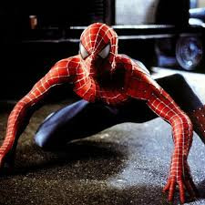
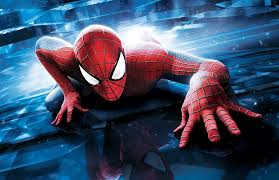
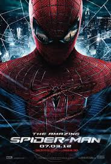

Челове́к-пау́к (англ. Spider-Man), настоящее имя Пи́тер Па́ркер (англ. Peter Parker) — супергерой, появляющийся в комиксах издательства Marvel Comics, созданный Стэном Ли и Стивом Дитко. С момента своего первого появления на страницах комикса Amazing Fantasy №15 (рус. Удивительная фантазия, август 1962) он стал одним из самых популярных супергероев. Ли и Дитко задумывали персонажа как подростка-сироту, воспитанного дядей и тётей, совмещающего жизнь обычного студента и борца с преступностью. Человек-паук получил суперсилу, увеличенную ловкость, «паучье чутьё», а также способность держаться на отвесных поверхностях и выпускать паутину из рук с использованием прибора собственного изобретения.
До появления Человека-паука в 1960-х подростки в комиксах о супергероях обычно были всего лишь их помощниками. Комиксы о Человеке-пауке разбили эти стереотипы, представив героем одинокого подростка, отвергаемого многими сверстниками[4], у которого не было опытного наставника, как Капитан Америка у Баки или Бэтмен у Робина. После смерти своего дяди Бена ему пришлось самостоятельно узнавать, что «с большой силой приходит и большая ответственность» (англ. With great power there must also come great responsibility).
Marvel выпустила множество серий комиксов о Человеке-пауке, самой первой из которых стала The Amazing Spider-Man (рус. Удивительный Человек-паук); её последний выпуск вышел в декабре 2012 года. На смену ей пришла серия комиксов The Superior Spider-Man (рус. Превосходный Человек-паук). Серия закончилась на 31 номере, и на её место пришёл третий том The Amazing Spider-Man. Комикс был вновь перезапущен после события Secret Wars (рус. Тайные войны). За годы своего существования Питер Паркер был то робким учеником средней школы, то проблемным студентом колледжа, то женатым учителем, то главой мультимиллиардной компании, а также членом нескольких команд супергероев, таких как Мстители, Новые Мстители, Фантастическая четвёрка. Наиболее характерным образом Питера Паркера вне жизни Человека-паука является образ независимого фотографа, который использовался в комиксах на протяжении многих лет.
Человек-паук является одним из самых популярных и коммерчески успешных супергероев. С увеличением своей популярности Человек-паук вышел за пределы комиксов, стал появляться на телевидении, в видеоиграх и кинофильмах. В разное время его играли актёры Тоби Магуайр (трилогия Сэма Рэйми), Эндрю Гарфилд (дилогия Марка Уэбба), Том Холланд («Первый мститель: Противостояние» и последующие фильмы в рамках кинематографической вселенной Marvel)[5]. Рив Карни предстал в роли Питера Паркера в бродвейском мюзикле 2010 года «Человек-паук: Погасить темноту» (англ. Spider-Man: Turn Off the Dark)[6]
